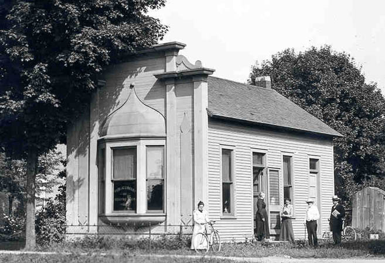

Kingsville Public Library
Kingsville's Public Library, a powder-blue single-story building located at 6006 Academy Street, is plagued by a plethora of ghostly apparitions. Its history might have something to do with this; part of the lot on which it stands was the site of the old school, which burned down in 1927. Though no one died in the fire, the student who set it was later put to death by the state of California; he supposedly confessed to the crime on death row.

Before that, the library building, built in 1894 as a "Free Reading Room," was moved from West Main Street to its present location on Academy. It had been leased to the local school district in 1911 (when the photo shown here was taken) and was moved to be closer to the school building. When the school burned, its lot was purchased by citizens and donated to library (now public) for its future growth. Additions were tacked on in 1965 and 1990.
The main ghost is said to be that of a main in a tall black hat. No one seems to know exactly who he is or why he haunts the library, but he is most often seen (and other phenomena are most often encountered) in the old section of the building, the one originally built on West Main Street. Other ghosts are believed to reside here as well, but it's the man in the black hat who most often makes an appearance.
Kingsville Public Library - Official Site
Dead Ohio: Kingsville Library
Tales from the Lips: Kingsville Library & "The Man in the Tall Black Hat"
Back